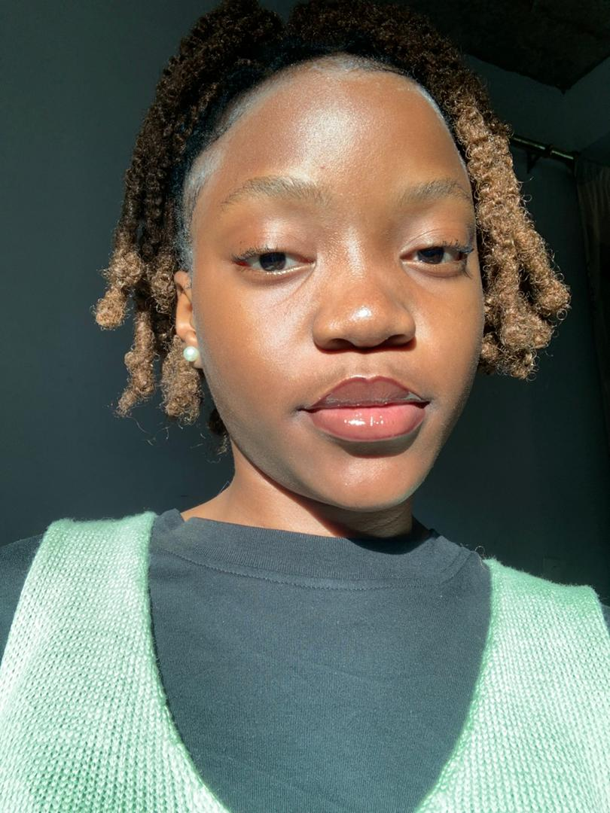
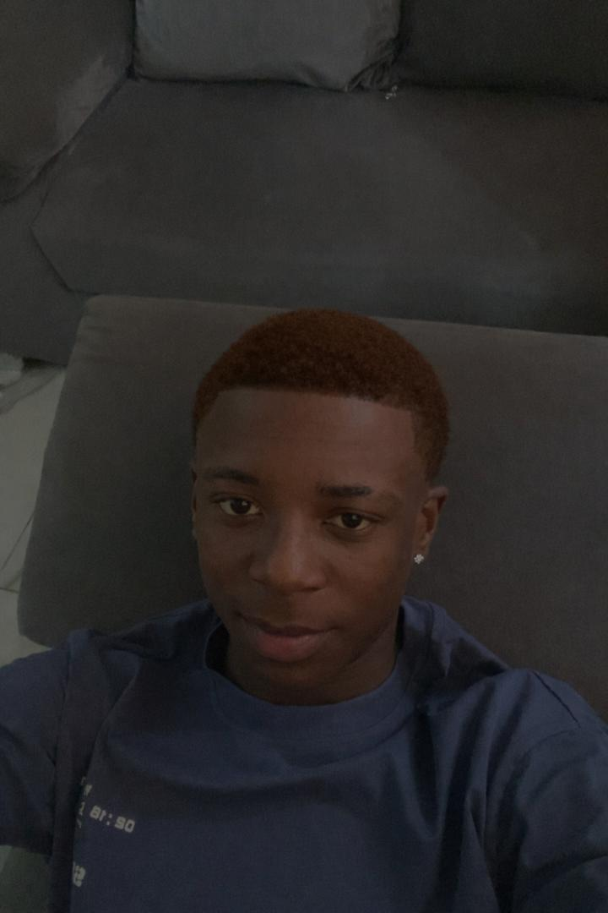
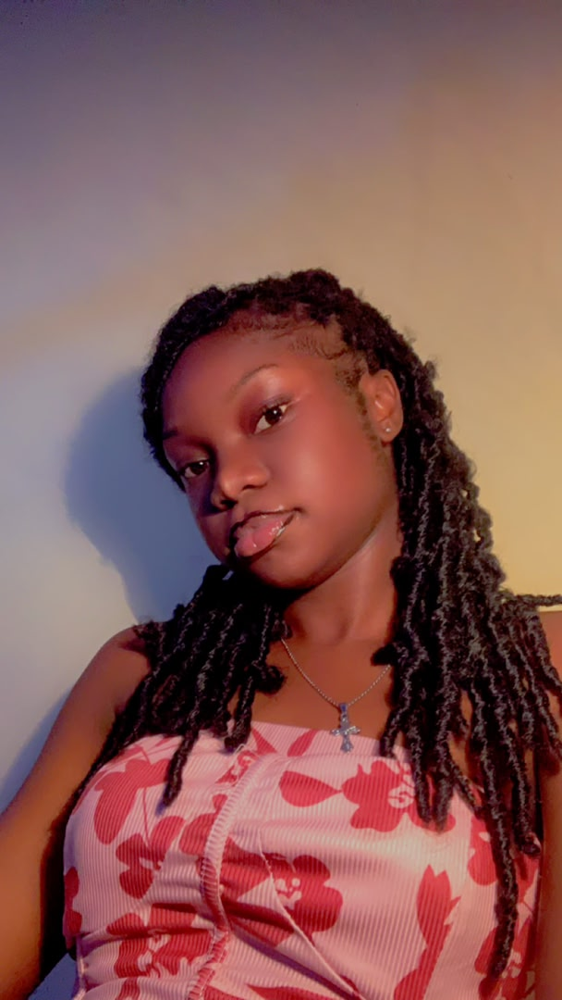
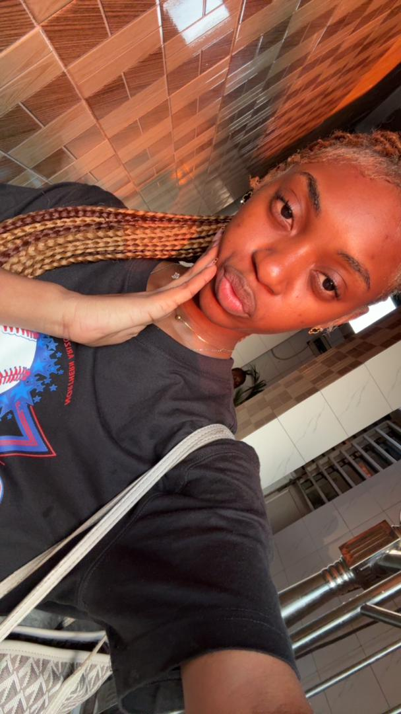

VOICI 4 ETUDIANTS DE L'Université Protestante au Congo EN Faculté des Sciences Informatiques, L1 LMD.

DIANZENZA KUEDIATUKA EUNICE
, étudiante en Sciences InformatiquesJe m’appelle Eunice et je suis étudiante en Sciences Informatiques.
Passionnée par les nouvelles technologies, je m’intéresse à la programmation,
au développement web et à la résolution de problèmes informatiques.
Ma formation me permet d’acquérir des compétences en conception de logiciels,
en gestion des bases de données et en développement d’applications. Curieuse et motivée,
je cherche constamment à approfondir mes connaissances
afin de contribuer à la création de solutions numériques innovantes et utiles à la société.

WAWA NDOBOYI MARCEL
Étudiant passionné par l’informatique,le développement web et les nouvelles technologies.
Motivé à apprendre et à créer des projets modernes

BONHEUR KIRONGOZI ILANGA
Je suis étudiante en informatique,passionnée par le numérique et la création de sites web,
je m’intéresse au développement et j’aime apprendre de nouvelles choses,
améliorer mes compétences et comprendre le fonctionnement des technologies,
mon objectif est de devenir développeuse et de réaliser des projets utiles, modernes et innovants.

BOYEKA BEKOMBE ROUKIYA
Étudiante passionnée par l'informatique et les nouvelles technologies.J'aime apprendre de nouvelles compétences et travailler sur des projets en équipe.